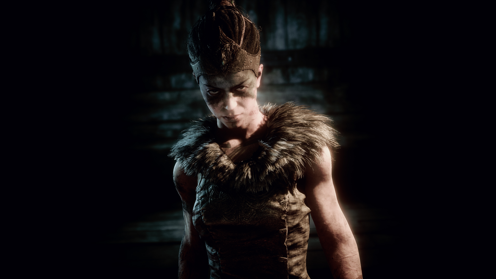
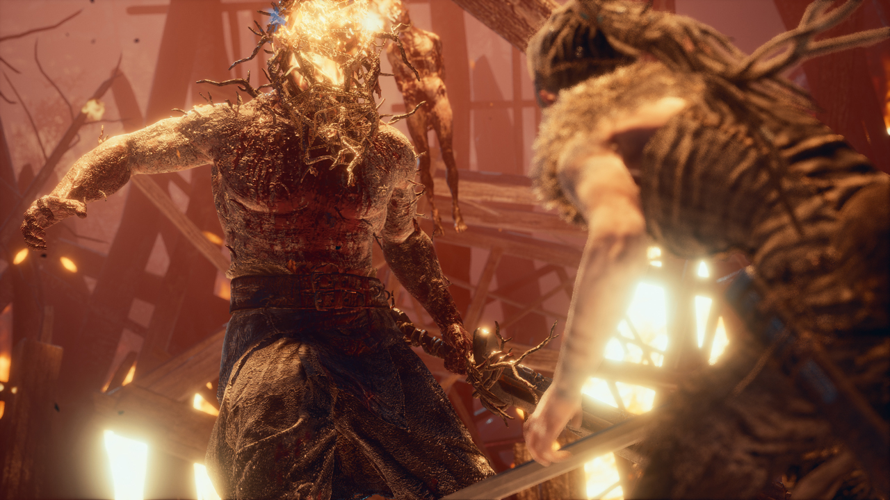
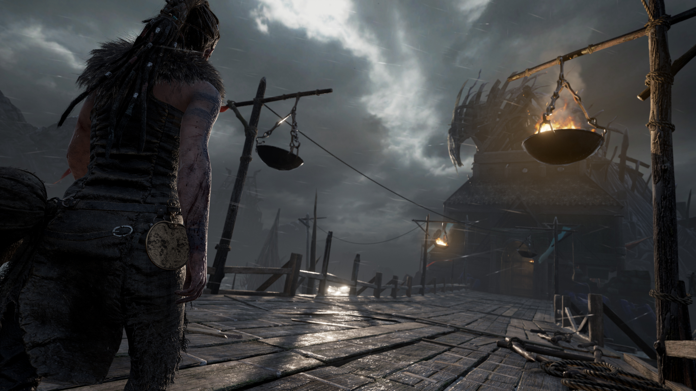

Desarrollado por Ninja Theory, este título logra combinar una narrativa poderosa con mecánicas de juego innovadoras,
creando una experiencia inmersiva que deja una huella duradera en los jugadores.
Uno de los aspectos más destacados de Hellblade es su protagonista, Senua. Interpretada de manera magistral por Melina Juergens,
Senua es una guerrera celta que emprende un viaje desgarrador al inframundo vikingo para salvar el alma de su amado.
- 
- 
-

-

- 
La representación de su lucha contra la psicosis es tratada con un nivel de sensibilidad y autenticidad raramente visto en los videojuegos.
El equipo de desarrollo trabajó en estrecha colaboración con neurocientíficos y
personas que sufren de psicosis para asegurar una representación precisa y respetuosa de la condición de Senua.
Las voces que Senua escucha constantemente, transmitidas con una asombrosa claridad gracias al audio binaural,
sumergen al jugador en su mente atormentada y refuerzan la sensación de aislamiento y desesperación.
Visualmente, Hellblade es impresionante. Los paisajes oscuros y surrealistas del inframundo están detalladamente diseñados,
creando una atmósfera opresiva y misteriosa.
Los efectos visuales, junto con una banda sonora inquietante y evocadora,
elevan la experiencia de juego a niveles cinematográficos.
Cada escenario y cada detalle están meticulosamente elaborados,
lo que demuestra el compromiso del estudio con la calidad y la inmersión.
El combate en Hellblade es visceral y desafiante, adecuado a la naturaleza del viaje de Senua. Aunque no es el foco principal del juego,
los enfrentamientos son intensos y requieren tanto habilidad como estrategia, proporcionando un equilibrio perfecto entre narrativa y acción.
| Requisitos Minimos | Requisitos Recomendados | |
|---|---|---|
| Sistema Operativo | Windows 10 o Superior |
... |
| Procesador | Intel i5 3570K |
... |
| RAM | 8Gb | ... |
| Tarjeta Gráfica | NVIDIA GeForce GTX 1080 |
... |
| Memoria | 30Gb | ... |
Uno de los aspectos más apreciables de Hellblade es su capacidad para hacer sentir al jugador
una conexión profunda con la protagonista y su historia.
A través de su viaje, Senua se convierte en un símbolo de resiliencia y coraje, enfrentándose no solo a enemigos físicos,
sino también a las oscuridades dentro de su propia mente.
Este enfoque valiente y honesto hacia temas de salud mental es innovador y necesario en la industria de los videojuegos.
Hellblade: Senua's Sacrifice es una experiencia inolvidable que combina una narrativa poderosa,
una protagonista compleja y una presentación audiovisual de primer nivel.
Es un testimonio del potencial de los videojuegos como una forma de arte capaz de explorar temas profundos y emocionales.
Ninja Theory ha creado una obra que no solo entretiene, sino que también educa y sensibiliza,
dejando una marca imborrable en todos aquellos que se atreven a embarcarse en el viaje de Senua.